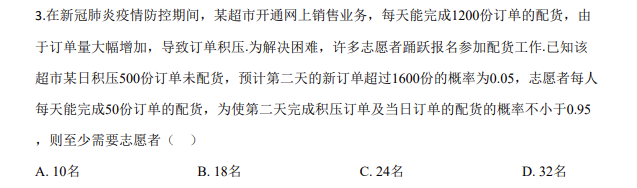
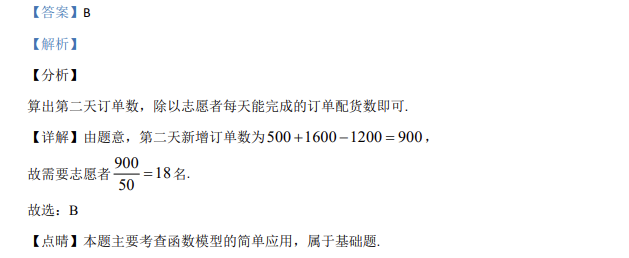

考点：概率估计 二项分布 概率应用

新冠疫情网售配货, 求使"次日清积压且配货概率不小于0.95"所需最少志愿者人数。

📄 原 PDF 第 1 页：
素材/真题/吉林/2008-2024·（吉林）数学高考真题/2020年高考数学试卷（理）（新课标Ⅱ）（解析卷）.pdf
3.考试结束后，将本试卷和答题卡一并交回. 一、选择题：本题共12小题，每小题5分，共60分.在每小题给出的四个选项中， 只有一项是符合题目要求的. 1.已知集合U={−2，−1，0，1，2，3}，A={−1，0，1}，B={1，2}，则( )UA BÈ =ð（ ） A. {−2，3} B. {−2，2，3} C. {−2，−1，0，3} D.
【答案】A 【解析】 【分析】 首先进行并集运算，然后计算补集即可. 【详解】由题意可得：1,0,1, 2A BÈ = -，则U2,3A B= -Uð. 故选：A. 【点睛】本题主要考查并集、补集的定义与应用，属于基础题. 2.若α为第四象限角，则（ ） A. cos2α>0 B. cos2α<0 C. sin2α>0 D. sin2α<0 【答案】D 【解析】 【分析】 由题意结合二倍角公式确定所给的选项是否正确即可. 【详解】当 6pa= -时，cos 2 cos 03paæ ö= - >ç ÷è ø ，选项B错误；